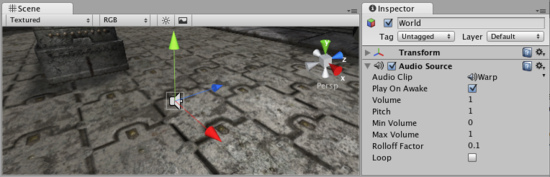

Audio Source
The Audio Source takes an Audio Clip and plays it from a position in the world.

The Audio Source in the Scene View and Inspector
The Audio Source in the Scene View and Inspector
Properties
| Audio Clip | Reference to the sound clip file that will be played |
| Play On Awake | If enabled, the sound will start playing the moment the scene launches. If disabled, you need to start it using the Play() command from scripting. |
| Volume | How loud the sound is at a distance of 1 world unit (1 meter) from the Audio Listener. |
| Pitch | Amount of change in pitch due to slowdown/speed up of the Audio Clip. Value 1 is normal playback speed. |
| Min Volume | The minimum value of the sound. No matter how far away you get, the sound will not get softer than this value. |
| Max Volume | How loud the sound gets at the loudest. No matter how close you get, the sound will never get louder than this value. |
| Rolloff Factor | How fast the sound fades. The higher the value, the closer the Listener has to be before hearing the sound. |
| Loop | Enable this to make the Audio Clip loop when it reaches the end. |
Creating Audio Sources
Audio Sources don't do anything without an assigned Audio Clip. The Clip is the actual sound file that will be played back. The Source is like a controller for starting and stopping playback of that clip, and modifying other audio properties.
To create a new Audio Source:
- Import your audio files into your Unity Project. These are now Audio Clips.
- Go to from the menubar.
- With the new GameObject selected, select .
- Assign the Audio Clip property of the Audio Source Component in the Inspector.
Hints
- The key to a nice sound environment is tweaking the Rolloff Factor.
- 3D audio effects will only work for mono Audio Clips. Stereo Audio Clips will be mixed as-is into the sound output.